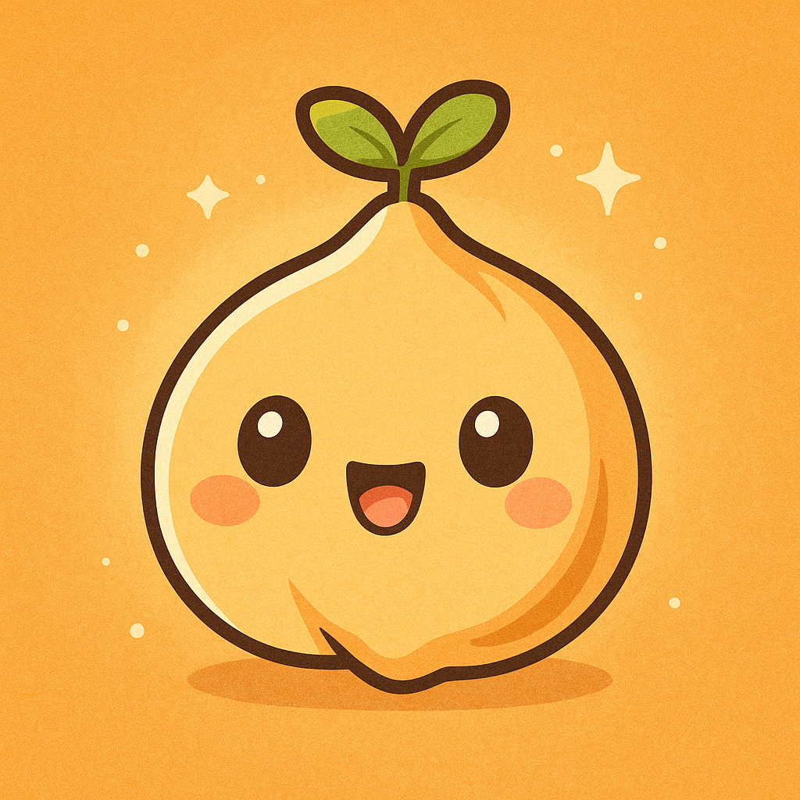

Chickpea Cooking Guide
Back to Recipes🌱 How to Soak & Cook Chickpeas 🥜
Estimated servings: ~3 cups cooked (1 cup = 1 serving)
💡 Note: 1 cup of dried chickpeas yields about 3 cups of soaked (and later cooked) chickpeas.
Step 1
💧 Soak the Chickpeas
Ingredients:
Instructions:
- Rinse chickpeas thoroughly 💧
- Use a large pot to soak — chickpeas triple in size!
- Cover with plenty of water and soak 8–12 hours or overnight 🌙
- Drain and rinse before cooking
Step 2
🔥 Cook in Instant Pot 
Ingredients:
Instructions:
- Use all the soaked chickpeas from Step 1. Do not discard or reduce — the recipe scales with what you soaked.
- Add soaked chickpeas, water (see amount above), and oil to the Instant Pot
- Optional for better flavor: add sliced onion, bay leaf, garlic, or 1 tsp cumin
- Set to High Pressure: 12 min (firm) or 15 min (soft)
- Natural pressure release for 10–15 minutes 💨
- Add salt after cooking to avoid tough skins
Yield